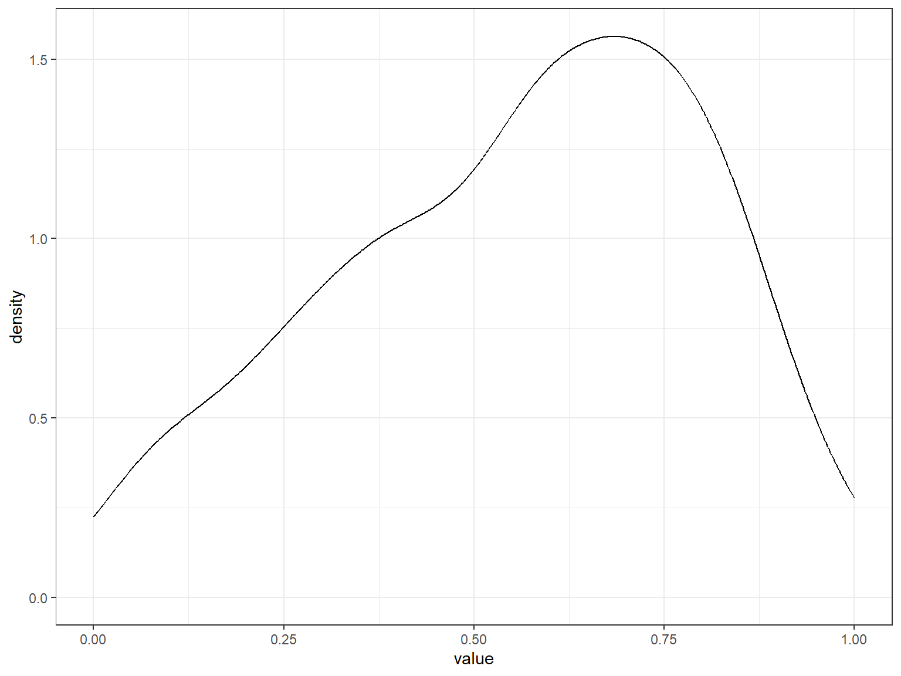
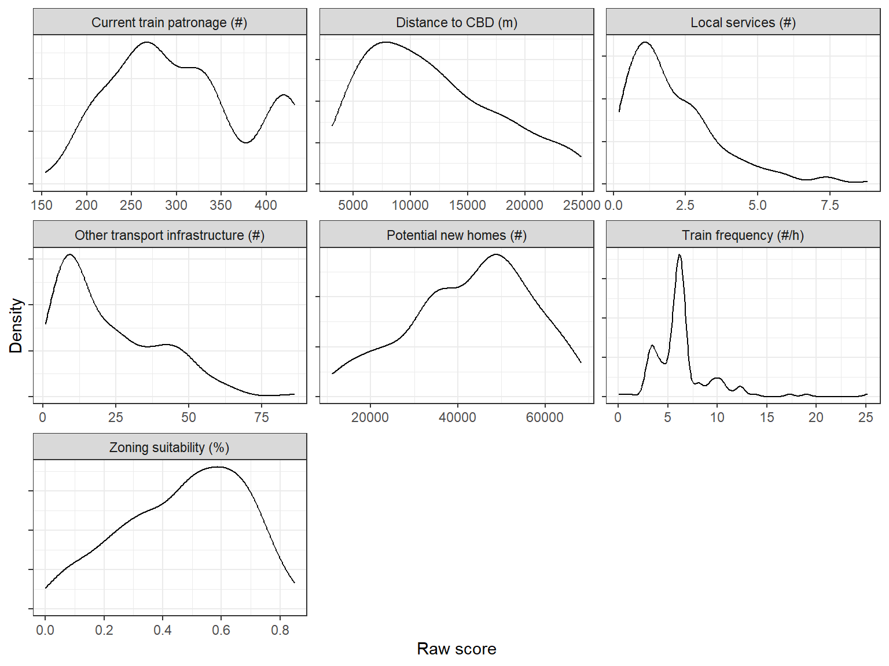
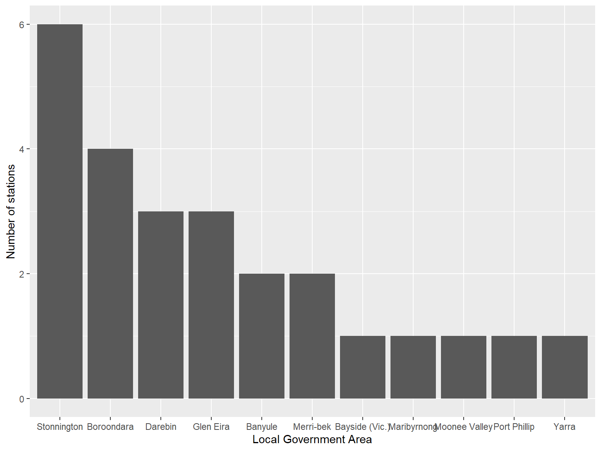
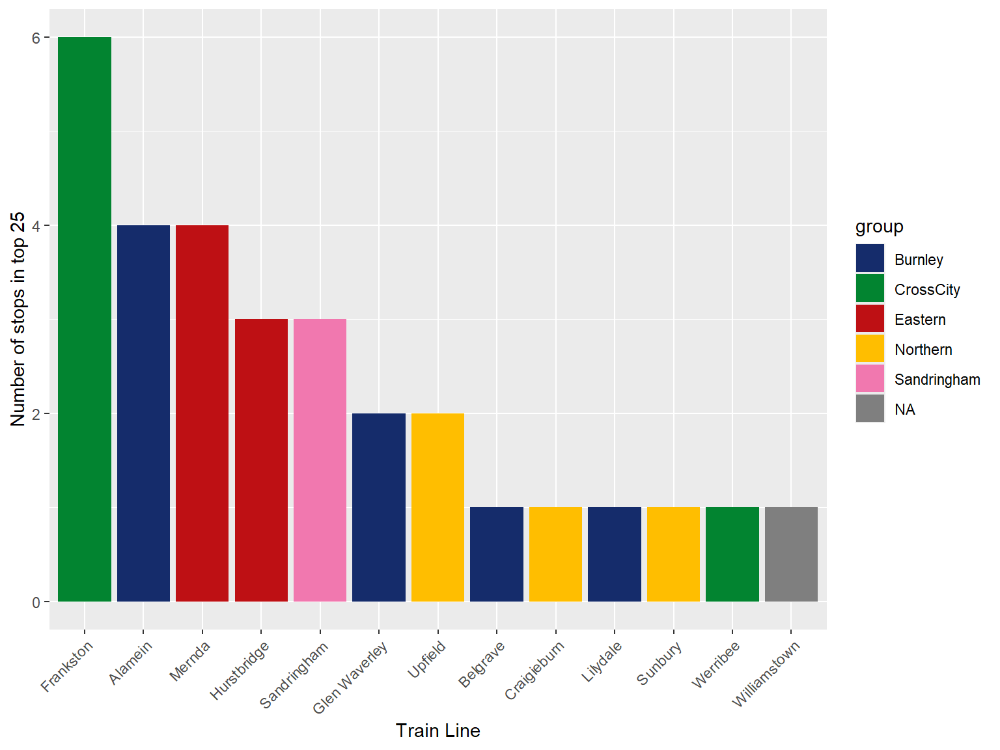
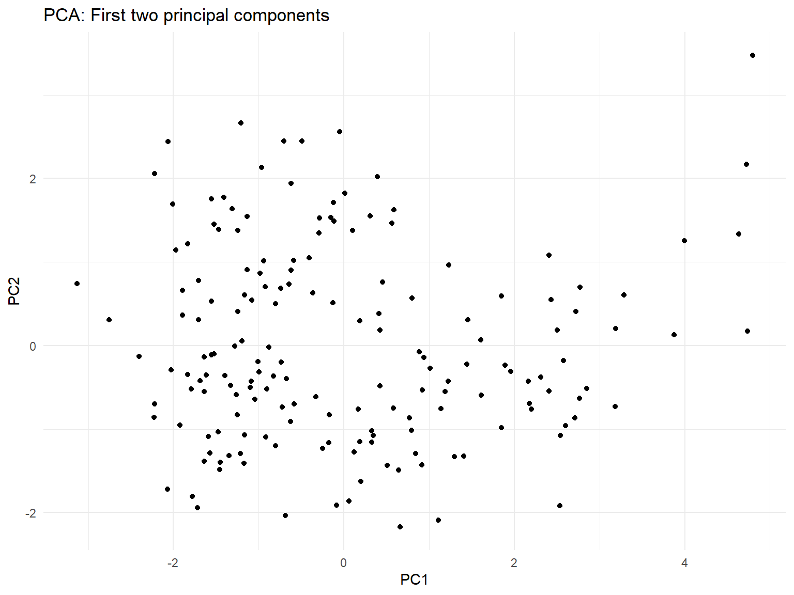
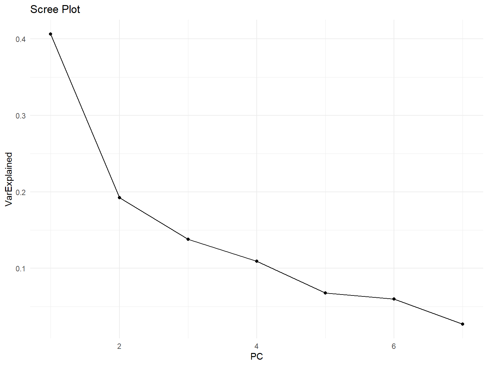

Extra Information & Analytics
Transformation of Scores
To see how scores are transformed, see here.
Distributions of Scores
Shown below are density plots of the scores, both raw and after transformation. The density plots seek to show how the underlying data is distributed, as well as how many extreme values there are.
Transformed scores
Created with ggridgeline.
Raw scores

Note
The same exclusion restrictions outlined here are applied to the raw score plots.
Top scores by LGA
The chart below breaks down the best 25 stations into their Local Government Areas. It is clear to see that the highest ranked stations are typically located in the south east of Melbourne or in the inner north.

Top Scores by Line
The below plot shows which train lines how the 25 top stations are located on. For stations on many lines, each line is counted once.
aaa

station_lines = readRDS('../r_objects/stations_with_lines.Rdata')
station_rankings = readRDS('../r_objects/station_rankings.Rdata') %>%
rename(Station_Name = "station") %>%
as.data.frame()
(station_rankings %>%
filter_stations(., "Station_Name") %>%
left_join(station_lines, by = 'Station_Name') %>%
select(average_peak_service_cap, lines) %>%
unique() %>%
rowwise() %>%
mutate(lines = lines %>% unlist() %>% as.vector() %>% paste0(.,collapse = ',') ) %>%
ggplot(mapping = aes(y = reorder(lines, average_peak_service_cap), x = average_peak_service_cap)) +
geom_col() +
xlab("Avg number of people on peak train before flinders") +
ylab("Lines serving station")) %>%
ggplotly()K-clustering
PCA
station_rankings = readRDS('../r_objects/station_rankings.Rdata') %>%
as.data.frame()
pca_result <- prcomp(station_rankings %>%
select(-station), center = TRUE, scale. = TRUE)
# Step 4: View PCA summary
summary(pca_result)Importance of components:
PC1 PC2 PC3 PC4 PC5 PC6 PC7
Standard deviation 1.6862 1.1606 0.9818 0.8741 0.68871 0.64649 0.43527
Proportion of Variance 0.4062 0.1924 0.1377 0.1092 0.06776 0.05971 0.02707
Cumulative Proportion 0.4062 0.5986 0.7363 0.8455 0.91323 0.97293 1.00000# Step 5: Visualize results
pca_data <- as.data.frame(pca_result$x)
pca_data = pca_data %>% mutate(name = station_rankings$station)
ggplot(pca_data, aes(x = PC1, y = PC2)) +
geom_point() +
theme_minimal() +
ggtitle("PCA: First two principal components")
# Step 6: Analyze loadings
print(pca_result$rotation) PC1 PC2 PC3 PC4
grz_nrz_pc -0.51392464 -0.049296750 0.32064468 -0.04490636
capacity_delta -0.30447354 -0.423273555 0.65481023 -0.15885592
average_peak_service_freq 0.24980273 0.415813745 0.23508353 -0.83230249
average_peak_service_cap 0.01975212 0.652896510 0.46434441 0.41414851
distance -0.42723158 0.423337552 -0.07215145 0.13438510
n_bus_tram 0.42911560 -0.199826233 0.37675161 0.24527982
walkability_score 0.46229727 -0.009444548 0.22446147 0.17401222
PC5 PC6 PC7
grz_nrz_pc -0.29510191 0.07287609 0.73227430
capacity_delta 0.10011299 -0.18346354 -0.48004399
average_peak_service_freq -0.05622312 0.11538649 0.01519051
average_peak_service_cap 0.39268149 -0.17020364 0.05507492
distance -0.53359208 0.31866313 -0.47825371
n_bus_tram -0.07176145 0.75334399 0.03388868
walkability_score -0.67502759 -0.49967342 0.01389447# Step 7: Calculate variance explained
var_explained <- pca_result$sdev^2 / sum(pca_result$sdev^2)
print(var_explained)[1] 0.40617947 0.19241782 0.13771414 0.10915647 0.06775984 0.05970696 0.02706530# Step 8: Scree plot
scree_data <- data.frame(PC = 1:length(var_explained),
VarExplained = var_explained)
ggplot(scree_data, aes(x = PC, y = VarExplained)) +
geom_line() +
geom_point() +
theme_minimal() +
ggtitle("Scree Plot")